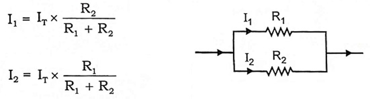

Answer:
Linear Network: A circuit or network whose parameters (resistors, inductors, capacitors) remain constant irrespective of changes in time, voltage, or temperature. Ohm’s law and superposition theorem are applicable.
Bilateral Network: A circuit whose characteristics remain the same regardless of current direction. Example: A network consisting only of resistors.
Answer:
A network in which circuit elements (resistance, inductance, capacitance) cannot be separated for analysis. Example: Transmission line, where R, L, and C are distributed along its length.
Answer:
Active Network: Contains a source of energy (e.g., voltage or current sources).
Passive Network: Contains no energy source, only passive elements (R, L, C).
Answer:
Answer:
Charge: Electrical property of atomic particles; measured in coulombs (C).
Electric Current: Time rate of change of charge; i = dq/dt; measured in amperes (A). DC → constant with time, AC → sinusoidal variation.
Power: Time rate of expending/absorbing energy; p = dw/dt = vi; measured in watts (W).
Network: Interconnection of two or more circuit elements.
Circuit: A network containing at least one closed path.
Answer:
i) A super-mesh occurs when a current source lies between two meshes (not on the outer edge).
ii) Combine the two meshes (excluding the current source branch) and apply KVL.
iii) Normal mesh includes all branches, but super-mesh skips the current source.
Answer:
i) In AC: Maximum power is delivered when load impedance = complex conjugate of source impedance (ZL = Z*S).
ii) Purely resistive: Load resistance = Source resistance (RL = RS).
iii) For complex: RL = RS, XL = −XS.
Answer:
ZIR is the circuit’s response with only initial stored energy (no external input).
Example: In RLC circuits, stored energy in inductors or capacitors causes transient voltages/currents after supply is disconnected (e.g., ringing in relays, surge in transformer windings).
Answer:
i) Check loose/oxidized connections.
ii) Use oscilloscope to detect noise/spikes.
iii) Implement shielding, twisted pair cables.
iv) Add ferrite beads/EMI filters.
v) Route signal and power lines separately.
Theory: Voltage drop may occur due to induced EMF or coupled noise.
Answer:
i) Represents magnetic linkage efficiency between coils (0–1 range).
ii) High coupling → efficient energy transfer.
iii) To maximize: Wind coils closely, use high-µ core (iron/ferrite), reduce air gaps, align axes properly.
Answer:
Node: A point where two or more elements are connected.
Tree: A path that includes all nodes without forming loops.
Branch: A part of the circuit lying between two nodes.